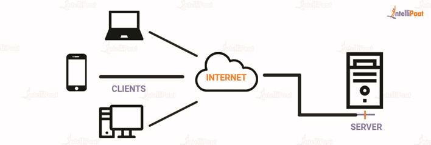
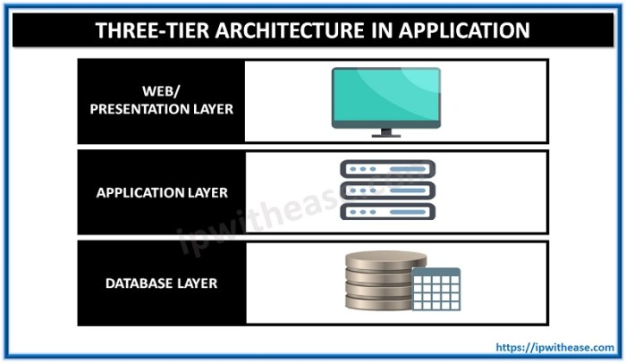
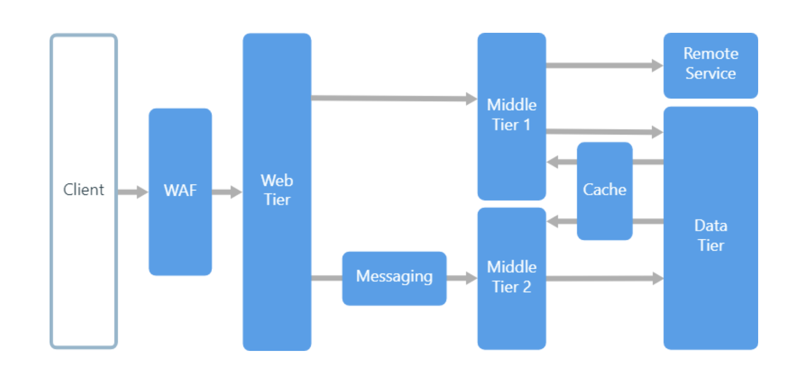
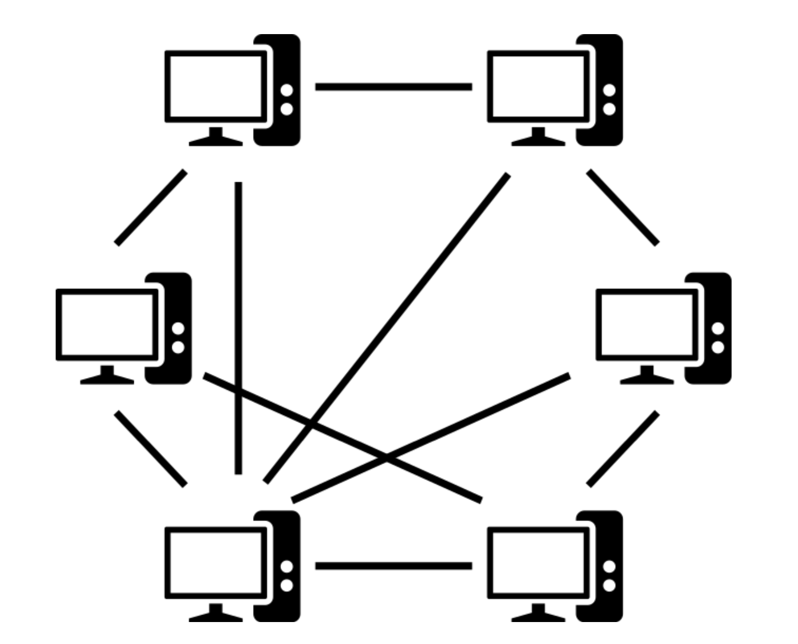
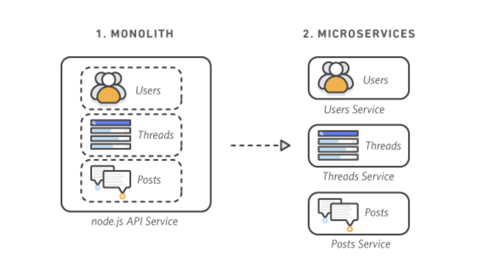
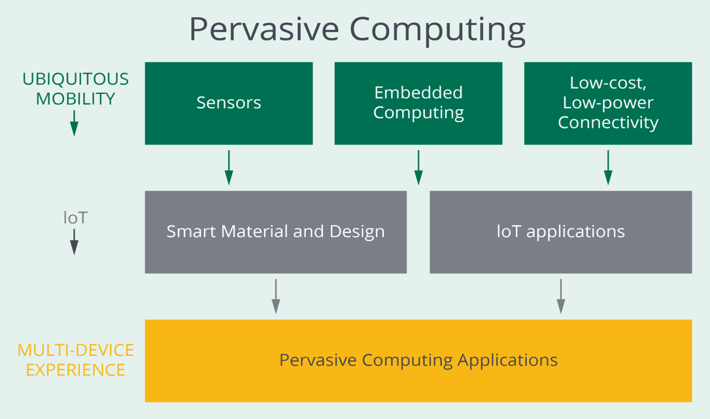
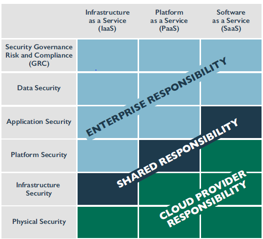
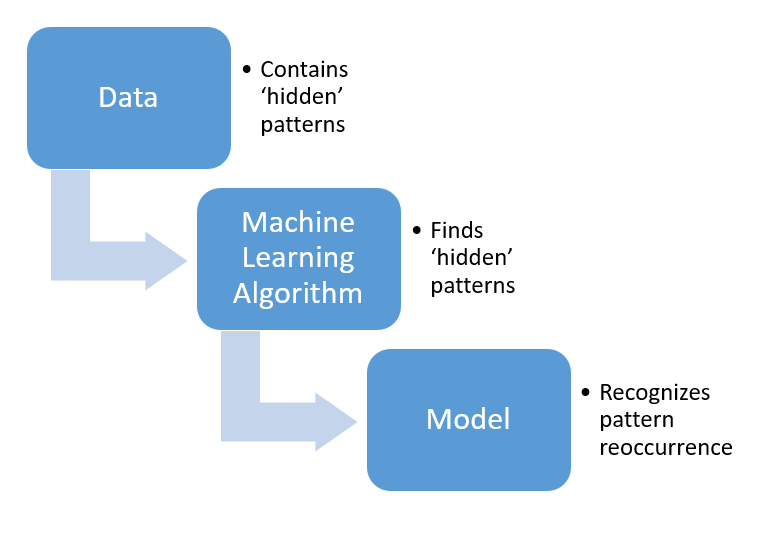

Building cyber-resilient software requires security to be
addressed at every architectural layer of a system. Security architecture aims to
provide guidelines for the secure design (and secure layering of functionality) of
software and systems. For systems designed absent of security architecture
considerations, organizations will have to bolster security by layering many
safeguards post-production to achieve an acceptable level of risk.
Objectives
Describe architecture and security-relevant design patterns.
Overview
A software security practitioner should understand how to assess
business needs to derive security architecture requirements. Cyber survivability
requirements will often be drafted to address the business need for confidentiality,
integrity, and availability of the software or system. This process often begins by
defining critical components whose function is essential to mission success. Design
decisions may be influenced by several factors, including legal and regulatory
requirements, benchmarking and good practices, cost and finance, and risk management
processes.
According to OWASP, “The Security Architecture (SA) practice
focuses on the security linked to components and technology you deal with during the
architectural design of your software. Secure Architecture Design looks at the
selection and composition of components that form the foundation of your solution,
focusing on its security properties.”1
It can be difficult for large organizations to respond to
changes in shifting markets or, in some cases, adversarial forces. The Zachman
framework can assist by providing a mechanism for classifying organizational
architecture. Zachman is used to model preexisting organizational functions and
processes while controlling business changes. The framework contains 36 categories
for describing complex systems. These categories consist of six columns and six
rows, which result in a two-dimensional matrix.
The columns ask enterprise-level questions.
What are business data, information, and objects?
How does business define processes?
Where are business operations?
When are business processes performed?
Why is a system or software needed?
What performance implications exist?
The six rows of the framework are:
Planner View. This describes the business purpose and strategy.
Owner View. This reveals automation candidates.
Designer View. This view outlines organizational system requirements.
Implementer View. This defines production constraints and design
details.
Subconstructor View. This view defines implementation-specific details
User View. This is the view of the functioning system within the
operational environment.
Though the framework is largely used for information
architecture, it can be applied to a business as a whole.
Sherwood Applied Business Security
Architecture (SABSA)
Sherwood Applied Business Security Architecture (SABSA) was
developed to inform information security architectures using a risk-based enterprise
approach and includes guidance for service management. It shares many similarities
with the Zachman Framework but was independently developed. SABSA provides a means
to integrate multiple solutions while managing complexity.
SABSA includes four life cycle phases: Strategy and Planning,
Design, Implementation, and Management and Measurement. The model contains six
layers: context, concept, logic, physical, component, and operational. Similar to
each row within Zachman, each SABSA layer has a domain or perspective. This aims to
ensure that security is considered equitably from many organizational perspectives.
Perspective
Context
Business
Contextual Architecture
Architect
Conceptual Architecture
Designer
Logical Architecture
Constructor
Physical Architecture
Technician
Component Architecture
Manager
Management Architecture
Table 1: SABSAZa
Security Control Identification and
Prioritization
Security controls are safeguards that mitigate risk of
preexisting systems. Physical, administrative, and technical controls may be
categorized by the functionality provided. Security controls may help to prevent,
deter, detect, or delay system disruptions or to correct and recover from security
incidents.
Security controls may provide more than one function (e.g., CCTV
may be used for deterring intruders or for detecting intrusions). Controls should be
prioritized based on a range of criteria such as immediate need, security posture,
complexity, resource availability, cost, and/or applicable regulations/standards.
The following are some examples of control classifications by nature of the control.
Physical controls. Fences, doors, locks, and fire extinguishers
Administrative controls. Incident response processes, management
oversight, and security awareness training
Technical controls. User authentication (login) and logical access
controls, antivirus software, and firewalls
Distributed Computing
Distributed systems are composed of components that can run on
different systems and communicate over the network or even the internet (but appear
as one system or pool of resources to the end user) to solve a problem. Enhanced
efficiency and performance due to additional computational power could be presented
as one advantage of distributed computing.
Over the years, technologies from various vendors have been
introduced that provide support for distributed objects. Distributed Component
Object Model (DCOM), Enterprise JavaBeans (EJB), and Common Object Request Broker
Architecture (CORBA) are among the technologies that were introduced for this
purpose.
A few examples of distributed computing systems include the
World Wide Web, Hadoop Distributed File System (HDFS), and Google File System (GFS
or GoogleFS).
Benefits of Distributed Computing
Systems
When compared to a centralized computing environment,
distributed computing can offer the following benefits:
Better price/performance ratio
More computation power
The ability to add computation power in increments as demanded by the business
to achieve growth
Distributed Computing
Architectures
Examples of distributed computing architectures include
Client-Server, 3-Tier, N-Tier, and Peer-to-Peer (P2P).
Client-Server Architecture
As implied by the name, this architecture consists of a client
and a server. The client component requests and consumes the service(s) that are
provided by the server component. From a security perspective, this would represent
an expanded attack surface as compared to centralized computing environment.
Adversaries can now go after the client, after the server, or after the
communication channel between the client and the server.

Figure 1: Client-Server Architecture
Three-Tier Architecture
As shown in the figure below, the three tiers in this
architecture include the presentation tier, the logic tier, and the data tier.
Security must be addressed at every tier of the architecture.

Figure: 2: Tier Architecture
N-Tier Architecture
Most enterprise web applications utilize the n-tiered
architecture that generally includes the web server tier, application server tier
and persistence (database) tier. There are various application-level threats
specific to each of the tiers, so security of these applications should be
considered in the context of the n-tiered architecture.

Figure 3: N-Tier Architecture
There are various application-level compensating controls that
must be provided at each tier. Some of those controls are provided by the underlying
set of technologies used (J2EE and .NET examples are discussed later), while others
must be provided by the programmers, architects, and designers involved in building
the enterprise web application.
Peer-to-peer (P2P) computing utilizes an architecture with no
special machine that provides a service or manages the network resources. Instead,
all responsibilities are uniformly divided among all machines, known as peers. Peers
can serve both as clients and servers. When one program controls other programs, as
is usually the case with client/server architectures, it is said to have a
master-and-slave configuration. However, in some distributed computing
architectures, the client and the server programs each have the ability to initiate
a transaction and act as peers; such a configuration is the defining characteristic
of P2P architecture. Management of these resources in a P2P network is not
centralized but spread among the resources on the P2P network uniformly, and each
resource can function as a client or a server. File sharing programs and instant
messaging are well-known examples of this type of architecture. P2P file sharing
networks are a common ground for hackers to implant malware, so when P2P networks
are designed, it is imperative to include strong access control protection to
prevent the upload of malicious files from sources that are not trusted.

Figure 4: Peer to Peer
Message Queuing
Message queues can be used to allow asynchronous communication
of smaller and independent building blocks within distributed applications. In this
scenario, the producer and consumers interact with the queue to add or process
messages. From a security perspective, protection of the messages in the queue
(i.e., encryption of message body in the queue) and restriction of access to the
queue are among aspects that must be addressed.
Service-Oriented Architecture
The evolution of software architecture has proved to be
inevitable. Service-oriented architecture (SOA) introduced new capabilities and
options to the architect. SOA offered an approach that helped address the
interoperability challenge found in typical IT environments. Increased reusability
was another benefit of SOA.
The paradigm used by SOA is also referred to as the
“find-bind-execute” paradigm, which is about registering the service in a public
registry used by the service consumer to find the service and execute.
Enterprise Service Bus (ESB)
An enterprise service bus (ESB) is a software architecture model
used for designing and implementing the interaction and communication between
mutually interacting software applications in SOA. As a software architecture model
for distributed computing, ESB is a specialty variant of the more general
client-server software architecture model; it promotes strictly asynchronous
message-oriented design for communication and interaction between applications. Its
primary use is in enterprise application integration (EAI) of heterogeneous and
complex landscapes.
Web Services
Web services are examples of SOA implementation. They provide
platform and vendor neutrality. They support interoperability, achieved through
XML-based open standards. Standards like Web Services Description Language (WSDL),
Simple Object Access Protocol (SOAP), and Universal Description, Discovery, and
Integration (UDDI) provide the approach for defining, publishing and using web
services.
Since their inception in early 2000s and the release of WSDL and
SOAP, web services have evolved. RESTful web services built on Representational
State Transfer (REST) architecture were introduced by the web consortium subsequent
to SOAP. These web services were built to work best on the web and provide the
opportunity for the construction of fast, simple, and lightweight RESTful
applications. Unlike SOAP, which is a protocol and relies strictly on XML for
transport, REST is an architectural style that supports various formats (e.g.,
JSON).
Securing Web Services
With respect to securing web services, authentication and
authorization are of utmost importance. Confidentiality, privacy, integrity, and
nonrepudiation must also be addressed through controls that have been
discussed earlier including encryption (transport-level and/or application-level)
and digital signatures. In fact, the security principles discussed in previous
chapters are relevant to web services security as well.
A foundational element of
innovation in today’s app-driven world is the Application Programming Interface
(API). From banks, retail, and transportation to IoT, autonomous vehicles, and
smart cities, APIs are a critical part of modern mobile, SaaS, and web
applications and can be found in customer-facing, partner-facing, and internal
applications. By nature, APIs expose application logic and sensitive data such
as Personally Identifiable Information (PII) and because of this, APIs have
increasingly become a target for attackers.
The APIs’ integrity must be preserved. This is true with respect
to the APIs that are developed and owned by you and those that are used by your
applications. API security is paramount. The following table lists the OWASP API
Security Top 10, which are API-specific security risks.
Risk
Description
API1:2023 - Broken
Object Level Authorization
APIs tend to
expose endpoints that handle object identifiers, creating a wide
attack surface of Object Level Access Control issues. Object
level authorization checks should be considered in every
function that accesses a data source using an ID from the
user.
API2:2023 - Broken
Authentication
Authentication
mechanisms are often implemented incorrectly, allowing attackers
to compromise authentication tokens or to exploit implementation
flaws to assume other user's identities temporarily or
permanently. Compromising a system's ability to identify the
client/user compromises API security overall.
This category
combines API3:2019 Excessive Data Exposure and API6:2019 - Mass
Assignment, focusing on the root cause: the lack of or improper
authorization validation at the object property level. This
leads to information exposure or manipulation by unauthorized
parties.
API4:2023 -
Unrestricted Resource Consumption
Satisfying API
requests requires resources such as network bandwidth, CPU,
memory, and storage. Other resources such as emails/SMS/phone
calls or biometrics validation are made available by service
providers via API integrations, and paid for per request.
Successful attacks can lead to Denial of Service or an increase
of operational costs.
API5:2023 - Broken
Function Level Authorization
Complex access
control policies with different hierarchies, groups, and roles
and an unclear separation between administrative and regular
functions tend to lead to authorization flaws. By exploiting
these issues, attackers can gain access to other users’
resources and/or administrative functions.
API6:2023 -
Unrestricted Access to Sensitive Business Flows
APIs vulnerable to
this risk expose a business flow - such as buying a ticket, or
posting a comment - without compensating for how the
functionality could harm the business if used excessively in an
automated manner. This doesn't necessarily come from
implementation bugs.
API7:2023 - Server
Side Request Forgery
Server-Side
Request Forgery (SSRF) flaws can occur when an API is fetching a
remote resource without validating the user-supplied URI. This
enables an attacker to coerce the application to send a crafted
request to an unexpected destination, even when protected by a
firewall or a VPN.
API8:2023 -
Security Misconfiguration
APIs and the
systems supporting them typically contain complex configurations
meant to make the APIs more customizable. Software and DevOps
engineers can miss these configurations, or don't follow
security best practices when it comes to configuration, opening
the door for different types of attacks.
API9:2023 -
Improper Inventory Management
APIs tend to
expose more endpoints than traditional web applications, making
proper and updated documentation highly important. A proper
inventory of hosts and deployed API versions also are important
to mitigate issues such as deprecated API versions and exposed
debug endpoints.
API10:2023 -
Unsafe Consumption of APIs
Developers tend to
trust data received from third-party APIs more than user input,
so they tend to adopt weaker security standards. In order to
compromise APIs, attackers go after integrated third-party
services instead of trying to compromise the target API
directly.
Microservices, which are best referred to as an architecture,
are a method of software development based on independent services best suited for
web and mobile applications. Independence in this context implies that these
services may even be developed using different programing languages and use
different storage with no centralized management. Services are meant to be designed
to serve a single specific function. Examples of functions could include e-commerce
cart, social media login and user roles, among others. The following example depicts
a shift to microservice architecture from monolithic application design.

Figure 5: Microservices
Secure Operational Architecture
Depending on the physical components and architecture,
deployment scenarios may include single server, distributed, and high availability.
Of these, the simplest configuration is the single server deployment. With all
modules on a single node, management of security may also be simplified. In a
distributed deployment scenario, multiple nodes will be involved. This can extend
reliability and efficiency. High availability, a special type of multinode
deployment, may require additional nodes and multiple instances of key processes.
This type of deployment can result in built-in redundancy and automatic failover.
Rich Internet Applications
A Rich Internet Application (RIA) is a web application with many
of the characteristics of desktop application software (e.g., visual user interfaces
with interactive components, drag-and-drop functionality, quick response to
mouse-clicks, transition effects, animation), typically delivered by way of a
site-specific browser, a browser plug-in, an independent sandbox, extensive use of
JavaScript, or a virtual machine.
The list of frameworks/technologies used to build RIAs is long
and includes HTML 5, AJAX and Angular. Some of the technologies that were initially
used for building RIAs include Adobe Flash, JavaFX, and Microsoft Silverlight. They
are examples of common RIA platforms that came with supporting runtime libraries,
execution engines, and rendering mechanisms. These technologies (some widely used,
and others as accepted) enabled developers to deliver expressive content (e.g.,
streaming audio and video, 3D graphics) to users across browsers, desktops, and
other devices. Various security concerns existed with these technologies.
Benefits of RIAs
Benefits of RIAs include reduced server load (since processing
is offloaded to the client as well), smaller footprint on the desktop, ability to be
used from any computer with a web browser, applications updates that can be
transparent to the user, and consistent experience regardless of browser or OS used.
Other benefits include enhanced user experience, such as information sharing,
collaboration, and functionality. RIA also gives more power to the end user as in
the case of Mashups.
Securing RIAs
RIAs may run within a web browser or within a secure sandbox.
Common web application vulnerabilities (e.g., SQL injection, cross-site scripting)
apply to RIAs as well (perhaps with a twist); however, since RIAs work differently
from other types of web applications in certain aspects, there are also new
opportunities to introduce vulnerabilities. As with other web applications, RIAs
must be subjected to various security testing techniques and methods, including
automated code scan/analysis and security code reviews.
Client-Side Exploits
Developers and architects often build complex logic in their
browser clients, with complex data validation and security rules, forgetting that
these rules run in the user domain and can be disabled or bypassed by the user. All
validation, authorization, and authentication must be done by the server. Data
validation may be done by the client to help prevent unnecessary round trips to the
server, but all validation must be backed up at the server as well. Solely trusting
the client to validate the data and input can be easily circumvented and can
potentially lead to serious server-side compromise. Never rely solely on the client
for validation in RIA.
Remote Code
Java applets (special, small application programs written in
Java) are good examples of mobile code. Code that is transmitted across the network
(downloaded from servers) and executed within the client browser also offers
capabilities for more interactivity. Applets, as examples of mobile code, certainly
present security concerns, some of which may be addressed through policies around
what actions the applet may or may not take, or what resources it may or may not
access.
Constant Connectivity
Another issue with RIAs is that their use on any machine with an
internet connection leads to these applications being executed from potentially
unsafe machines; for example, in airports and internet cafes. These machines are
more likely to be infected with key loggers and other malware than corporate
machines running the more traditional desktop applications.
Pervasive and Ubiquitous
Computing
The essence of the vision for pervasive and ubiquitous computing
is devices equipped with the capability to store, process, and transmit information,
creating the possibility of environments saturated with computing and communication
capabilities that can improve everyday human life.
These capabilities are not limited to laptops, notebooks,
smartphones, and tablets; they can also enhance wearable devices, appliances, and
many other things. Applications for pervasive computing can be found in energy,
military, safety, consumer, logistics, and other areas.
As expected, with new possibilities come new risks and new types
of threats. This figure shows elements involved in pervasive computing, ubiquitous
mobility, IoT, and multidevice experience.

Figure 6: Pervasive Computing
Internet of Things (IoT)
With the significant rise in the number and type of smart and
connected devices, everyday human life is being transformed. In 2019, Dr. Charles H.
Romine, director of NIST’s Information Technology Laboratory, testified before the
U.S. Senate Committee on Commerce, Science, and Transportation Subcommittee on
Security, “Every sector has its own types of IoT devices, such as specialized
hospital equipment in the healthcare sector and smart road technologies in the
transportation sector,” and there are many enterprise IoT devices for every sector.
“Versions of nearly every consumer electronics device, many of which are also
present in organizations’ facilities, have become connected IoT devices.... Many
organizations are not necessarily aware that they are using a large number of IoT
devices. It is important that organizations understand their use of IoT because many
IoT devices affect cybersecurity and privacy risks differently than conventional IT
devices do.”3
With this great potential, new types of vulnerabilities and
exploits should be expected as the attack surface continues to increase.
In its publication, Considerations for Managing Internet of
Things (IoT) Cybersecurity and Privacy Risks, NIST notes, “Cybersecurity
and privacy risks for IoT devices can be thought of in terms of three high-level
risk mitigation goals:
Protect device security. In other words, prevent a device from being
used to conduct attacks, including participating in distributed denial of
service (DDoS) attacks against other organizations, and eavesdropping on network
traffic or compromising other devices on the same network segment. This goal
applies to all IoT devices.
Protect data security. Protect the confidentiality, integrity, and/or
availability of data (including personally identifiable information [PII])
collected by, stored on, processed by, or transmitted to or from the IoT device.
This goal applies to each IoT device except those without any data that needs
protection.
Protect individuals’ privacy. Protect individuals’ privacy impacted by
PII processing beyond risks managed through device and data security protection.
This goal applies to all IoT devices that process PII or that directly or
indirectly impact individuals.”4
Application of radio-frequency identification (RFID)
technologies can be found in all industries. Objects equipped with RFID tags can be
identified, and the information stored on tags can be read wirelessly by RFID
readers. Depending on the RFID technologies used (e.g., passive, active), the read
range can vary, but is generally limited to short distances. RFID technologies have
also been used for location identification and tracking/tracing purposes.
From a security perspective, wireless transmission of
potentially sensitive data is a general concern, and the risk of rogue
(unauthorized) RFID readers must also be addressed. Faraday cages can be used as a
mitigation strategy for shielding and prevention of signal penetration. Concerns
around privacy violation (from a tracking standpoint) could also present challenges
to adoption of certain RFID applications.
Near-Field Communication
Near-field communication (NFC) also relies on RF signals to
transfer data between devices in close proximity. Ease of use and close-range data
transfer capabilities make the technology suitable for numerous applications,
including location-specific transactions such as cashless/contactless payment using
mobile devices or for access control purposes.
From a security perspective, flaws in implementation of the
technology or functionality may present vulnerabilities that could lead to
compromise. Although data exchange is limited to short distances, where possible,
encryption should be used for secure data exchange.
Sensor Networks
Although the primary application of sensor networks was found in
monitoring weather (e.g., humidity and temperature) and other environmental
conditions, the technology can extend the usage to many other areas as well.
Small nodes are deployed to make the detection and transmit the
data for processing to a central location. From a security perspective, the
reliability and trustworthiness of sensors and data confidentiality are usually
highlighted as general concerns.
Embedded Software
Computing may be embedded into the hardware itself to control
the limited set of functions on a hardware device. Embedded software does not
require direct user input or interactions. Typically, embedded systems are
associated with smaller devices with smaller processors and minimal OS designed for
a specific purpose.
Embedded software is different from firmware. While the first
may be the only piece of code that runs on the hardware, that normally will not be
the case with firmware (i.e., it hands over the control to another software, such as
the operating system).
Embedded software has less visibility (as compared to
application software) so far as a user is concerned and is designed to fulfill a
specific purpose; nevertheless, its security is just as important as that of other
types of software.
Secure Update
Unlike enterprise or desktop computing environments, embedded
systems are likely cost-sensitive with computational limitations, leaving limited
room for security considerations (e.g., processing of encryption with large key
lengths). One implication is that this can create a barrier for the application of
best practices and implementation of resource intensive safeguards. This may present
some challenges, but at the same time highlights the need for device makers and
software developers to make security a high priority and address the patching and
updating of the software. Examples of embedded systems include computers in
automobiles, wearables, and appliances.
Field-Programmable Gate Array (FPGA)
Security Features
As implied by the name, field-programmable gate array (FPGA)
semiconductor devices are meant to be programmed to desired functionality after
manufacturing, which contrasts with application-specific integrated circuits that
are custom manufactured with specific design and for specific tasks.
The programmability of FPGA creates the opportunity for its
application/usage in various industries and markets including automotive, aerospace
and defense, consumer electronics, and many others.
Security-relevant aspects of FPGA include concerns around
copy/theft/clone of intellectual properties of the application and data, tampering
with the application to disable features or leak information, and introducing
malware. With the assumption that the FPGA is in the hands of an adversary, usage of
the FPGA for malicious activities is part of the concern.
Cloud Architectures
One definition of cloud computing, provided by NIST, is the
following: “Cloud computing is a model for enabling ubiquitous, convenient,
on-demand network access to a shared pool of configurable computing resources (e.g.,
networks, servers, storage, applications, and services) that can be rapidly
provisioned and released with minimal management effort or service provider
interaction. This cloud model is composed of five essential characteristics, three
service models, and four deployment models.”5
The benefits of cloud computing for business and IT include
efficiency, cost reduction, flexibility, and scalability on demand. The most notable
benefit of the adoption of cloud computing for the organization is touted as the
ability to transition from capital expenditure (CapEx) to operation expenditure
(OpEx). Specific benefits of the adoption of cloud computing to the organization
would be tied to each service model: infrastructure as a service (IaaS), platform as
a service (PaaS), and software as a service (SaaS). Organizational benefits from
cloud computing vary by deployment model—private, public, community, or hybrid.
Cloud service models include software as a service (SaaS),
platform as a service (PaaS), and infrastructure as a service (IaaS). It is
important to understand that responsibilities in general, and security-relevant
responsibilities, must be clearly understood for each service model mentioned above.
Software as a Service
Software as a service (SaaS) is a distributed model where
software applications are hosted by a vendor or cloud service provider and made
available to customers over network resources. SaaS is currently the most widely
used and adopted form of cloud computing, with users most often needing nothing more
than an internet connection and credentials to have full use of the cloud service,
application, and data housed. Within SaaS, there are two delivery models currently
used. First is hosted application management (hosted AM), where a cloud provider
hosts commercially available software for customers and delivers it over the web
(internet). Second is software on demand, where a cloud provider provides customers
with network-based access to a single copy of an application created specifically
for SaaS distribution (typically within the same network segment). Within either
delivery model, SaaS can be implemented with a custom application, or the customer
may acquire a vendor-specific application that can be tailored to the customer.
SaaS has several key benefits for organizations. These include,
but are not limited to:
Ease of use and limited/minimal administration
Automatic updates and patch management
Always running the latest version and most up-to-date deployment (no manual
updates required)
Standardization and compatibility (all users have the same version of software)
Global accessibility
Platform as a Service
Platform as a service (PaaS) is a way for customers to rent
virtualized servers and associated services for running existing applications or
developing and testing new ones.
PaaS has several key benefits for developers; these include, but
are not limited to:
Operating systems can be changed and upgraded frequently.
The ability to work together on software development projects within the same
environment when development teams are scattered across various geographic
locations.
Services are available and can be obtained from diverse sources that cross
international boundaries.
Upfront and recurring or ongoing costs can be significantly reduced by utilizing
a single vendor, rather than maintaining multiple hardware facilities and
environments.
Infrastructure as a Service
(IaaS)
Infrastructure as a service (IaaS) is a model where the customer
can provision equipment as a service to support operations, including storage,
hardware, servers, and relevant networking components. While the consumer has use of
the related equipment, the cloud service provider retains ownership and is
ultimately responsible for hosting, running and maintaining the infrastructure. IaaS
is also referred to as hardware as a service by some customers and providers.
IaaS has multiple key benefits for organizations; these include,
but are not limited to:
Usage that is metered and priced based on units (or instances) consumed,
allowing it to be billed back to specific departments or functions
Ability to scale infrastructure services up and down based on use, which is
particularly useful and beneficial where there are significant spikes and dips
in usage within the infrastructure
Reduced cost of ownership, meaning no need to buy assets for everyday use, no
loss of asset value over time, and reduction of other related costs of
maintenance and support
Reduced energy and cooling costs, plus a green IT environmental effect, with
optimum use of IT resources and systems
Cloud Computing Deployment
Models
There are different cloud computing deployment models that each
offer advantages for a particular situation. The pay-as-you-go pricing model is a
key driver for growth.
Public cloud. Delivered over the internet, computing resources (e.g.,
hardware and software) are owned and managed by the cloud service provider
(CSP). The public cloud is a multitenant environment where the computing
infrastructure is shared by tenants. This is the most common type of cloud and
the least costly as compared to the other types.
Private cloud. Computing infrastructure exclusively used by a single
organization, which can result in enhanced security and greater control over
critical operations. As expected, single tenancy also results in higher costs as
compared to other types of cloud. Private cloud is often used by larger
organizations (e.g., financial institutions) and government agencies.
Community cloud. A multitenant environment that differs from a public
cloud in the sense that the tenants (organizations) likely have similar needs
and concerns. As expected, costs will likely be higher than the public cloud,
but less than a private cloud. When compliance and regulatory measures are key
requirements (e.g., in government or healthcare), community cloud could be a
viable solution.
Hybrid cloud. Not every service or application must be hosted in a
private cloud, and not every organization is ready or willing to entirely
dismantle its own data centers and migrate everything into the cloud. A
combination of on-premises infrastructure or private cloud with the public cloud
could be advantageous and offer great flexibility. Bursting out of a private
cloud and into a public cloud during peak demand times (e.g., tax filing season)
for software services is an example of the flexibility mentioned.
Overarching Risks and Shared Security
Model
Security in the cloud is affected by various factors. Developers
must determine security requirements based on the selected cloud deployment and
service model. At all times, developers must keep in mind two key risks associated
with applications run in the cloud:
Multitenancy
Third-party administration
To better understand this concept, observe the shared
responsibility model depicted in the figure below.

Figure 7: Shared Security Model
Cloud Resource Management
Cloud assets/resources are controlled through the management
plane software. Parts of the management plane are exposed to cloud service
providers’ customers in the form of a management console, through graphical and
command line interfaces and APIs.
The key functionality of the management plane is to create, start, and stop
virtual machine instances and provision them with the proper virtual resources
such as CPU, memory, permanent storage, and network connectivity.
As the management plane is the most powerful tool in the entire cloud
infrastructure, it will also integrate authentication, access control, and
logging and monitoring of resources used.
The management plane is used by the most privileged users: those who install and
remove hardware, system software, firmware and the like. The management plane is
also the pathway for individual tenants who will have limited and controlled
access to the cloud’s resources.
The management plane components are at the highest risk concerning software
vulnerabilities.
Compute
The compute resources of a cloud service provider are a
combination of:
Processing threads
Volatile memory
Data storage
These compute resources are managed and allocated on a per-guest
OS and/or a per-host basis within a resource cluster. The use of reservations,
limits, and shares provides the contextual ability for an administrator to allocate
the compute resources of a host.
Cloud Storage
On a technical level, persistent mass storage in cloud computing
typically consists either of spinning hard disk drives or solid-state drives (SSDs).
For reliability purposes, disk drives are often grouped to provide redundancy.
Cloud providers also provide object storage, a method for
storing unstructured data using the concept of units or objects rather than a
traditional file system. The objects (files) are stored with additional metadata
(content type, redundancy required, creation date, etc.) that are accessible through
programming or web interfaces. Volume storage is a virtual hard drive that can be
attached to a virtual machine instance and be used to host data within a file
system. Storage is written to committed blocks of data. Volumes attached to IaaS
instances behave just like a physical drive or an array.
Storage Area Network
A is a network
that provides access to consolidated, block-level data storage. SANs are primarily
used to enhance storage devices, such as disk arrays, tape libraries, and optical
jukeboxes, accessible to servers so that the devices appear to the operating system
as locally attached devices. A SAN typically has its own network of storage devices
that are generally not accessible through the local area network (LAN) by other
devices. The cost and complexity of SANs dropped in the early 2000s to levels
allowing wider adoption across both enterprise and small-to-medium-sized business
environments.
A SAN does not provide file abstraction, only block-level
operations. However, file systems built on top of SANs do provide file-level access
and are known as shared-disk file systems.
Network-Attached Storage (NAS)
is a
file-level computer data storage server connected to a computer network that
provides data access to a heterogeneous group of clients. NAS is often manufactured
as a computer appliance, a purpose-built, specialized computer that serves files
using its hardware, software, or configuration. NAS systems are networked appliances
that contain one or more storage drives, often arranged into logical, redundant
storage containers or redundant array of independent disks (RAID). NAS removes the
responsibility of file serving from other servers on the network. It typically
provides access to files using network file sharing protocols such as NFS, SMB/CIFS,
or AFP. From the mid-1990s, NAS devices began gaining popularity as a convenient
method of sharing files among multiple computers. Potential benefits of dedicated
NAS compared to general-purpose servers also serving files include faster data
access, easier administration, and simple configuration.
Mobile Applications
Keep in mind that typical 21st-century mobile applications have
a client-server architecture, so there is a client component and a server component.
The client component runs on the device, which operates by means of Android, iOS, or
some other mobile OS. The client app, which is what the user interacts with to pay
bills or send a secure message, for example, is the mobile application from user’s
perspective. This is the piece that is downloaded from the app store and installed
on the device.
The other component, the server, is hosted somewhere on the
premises or in the cloud and is what the client component interacts with. The server
component is important, as this is where data is stored and processed. Interaction
between the client and the server is over the internet using some form of
application programming interface (API).
Mobile Security Risks
Attacks that target software vulnerabilities may attempt to
exploit vulnerabilities in the client component or the server component, or they may
target the data transmission between the client and the server components.
There are reports that compare critical vulnerabilities between
applications written for Android versus iOS, but information can also be gleaned
from the OWASP Mobile Top 10 list. Included in this Top 10 list by order of
importance:
M1—Improper platform usage
M2—Insecure data storage
M3—Insecure communication
M4—Insecure authentication
M500—Insufficient cryptography
M6—Insecure authorization
M7—Client code quality
M8—Code tampering
M9—Reverse engineering
M10—Extraneous functionality
Mobile Threat Landscape
As capabilities of mobile devices continue to grow, more
computer functionality is incorporated. Expanded capabilities have resulted in new
use cases for the devices, and these use cases open the door for potential misuse,
as well as new threats, vulnerabilities, and attack vectors.
This figure shows the various communication mechanisms in a
mobile device, all of which pose security threats.
Characteristics of mobile devices are highly relevant to the
discussion of applicable risks, threats and vulnerabilities. As presented by
NIST Special Publication 800-124—Guidelines for Managing the Security of Mobile
Devices in the Enterprise, threats at a high level include, among others:
Mobility and lack of physical security
Untrusted (hijacked and rooted) devices
Untrusted networks (insecure channels used to access the internet)
Untrusted applications
Untrusted content
Interaction with other devices
Mobile User Interface Design
The type, size, and granularity of the user interface (UI)
utilized by mobile applications varies widely. This means that mobile UI design must
consider constraints and contexts, screen, input, and mobility as outlines for
design.
The mobile device is sized to fit in the user’s hand, so the
input capability must allow the users to manipulate a system, and the device’s
output (usually the screen) should allow the system to indicate the effects of the
user’s manipulation.
Hardware Platform Concerns
The term platform in this context refers to the specific
structures within which software will run. Various hardware platforms may have their
own machine languages.
Software may be designed for a specific platform, with specific
processor and architecture specifications.
Hardware platform capabilities or the lack of certain needed
capabilities may also have an impact on the design of security features of the
software. An example of such capabilities is hardware-assisted cryptography.
Vulnerabilities and Risk
Mitigation
Vulnerabilities that arise from the device hardware are a great
concern. Preventions for Integrated Circuits (IC) hardware exploits are complex and
difficult to implement. They are typically remediated by upgrading hardware,
securing supply chains, and manual inspections. Hardware firmware patches are issued
less frequently than software updates, and patch management systems are not
streamlined for updating hardware and firmware across a diverse range of
manufacturers. Finally, the knowledge and skill set required for updating computer
hardware and firmware, especially network appliances, is different than patching
endpoint software. As a result, remediation for hardware vulnerabilities may be
neglected or may not receive the attention we provide to software vulnerabilities.
Side-Channel Mitigation
A side-channel attack is enabled by information leakage from a
physical cryptosystem. Characteristics that could be exploited include timing, power
consumption, and electromagnetic and acoustic emissions.
A side-channel attack does not require the physical hacking of
the device. Instead, secret information, such as cryptographic keys, will be
extracted by probing the signatures produced by device electromagnetic radiation,
voltage spikes, power consumption, and other issues.
The latest security specification introduced by FIPS 140-3
includes the requirement of security tests for noninvasive attacks, which are
side‐channel attacks for exploitation of weak channels. Some of the defenses
implemented by cryptographic modules against side-channel attacks are constant
execution time and stabilization of characteristic signatures for sensitive
operations.
Speculative Execution Mitigation
Microprocessors use speculative execution to improve
performance. When speculative execution is utilized, the microprocessor will use
ideal clock cycles to execute a block of upcoming instructions before its time. For
example, rather than waiting for the outcome of a condition that determines the flow
of the execution in one of the two paths, the microprocessor executes based on a
speculated path. When the result of the condition is determined, the processor
either abandons the result of the speculated execution or leaps ahead. Since
speculative execution results in microprocessors executing a set of instructions,
the executed code may leave a residue of sensitive information in the computer cache
or memory that could be exploited using side-channel attacks. For mitigation, the
speculative execution should be disabled.
Both Meltdown and Spectre attacks exploit the vulnerabilities of
modern high-speed processors that use speculative execution techniques. The
Cybersecurity and Infrastructure Security Agency Alert TA18-004A provides guidance
for Meltdown and Spectre Side-Channel Vulnerability.7
In general, a hardware security module (HSM) is a secure
hardware unit dedicated to the secure management and life cycle of cryptographic
keys. HSM is used for generation, storage and provisioning of crypto keys and
hardware Random Number Generator (RNG). Embedded hardware security modules (eHSM)
are hardware elements that are integrated into digital devices for cryptographic
functions. eHSMs are designed to be used in IoT devices and for automotive security.
Cognitive Computing
Cognitive computing is an emerging discipline based on computers
simulating human cognitive capabilities. However, there is much to be discovered
about the human brain. Humans collect information from the environment through
senses and learn through the process of trial and error. Humans also can correlate
perceived information to predict events or establish a pattern for occurrences.
To be practical, cognitive computing systems must learn from
natural interaction with humans and through communication with other smart systems.
Natural interaction with humans requires, among other things, Natural Language
Processing (NLP), Speech Recognition, and Computer Vision.
Artificial Intelligence (AI)
Data is everywhere. The digital age has ignited systems learning
through pattern recognition in data. As a result of recent advancements in AI such
as Depp Learning, algorithms are becoming more capable. Deep Learning is a proven
form of cognitive computing. With rapid developments in cloud computing, software
engineering, and hardware technologies, the proliferation of Deep Learning will lead
to advancements in industries such as finance, healthcare, education, and gaming.
Graphics processing hardware manufactures, such as NVIDIA, have started producing AI
specific processing units.
Machine Learning
is a field within
AI where the combination of rule-based algorithms and data teaches the computer
system to perform tasks by creating a model. Machine learning (ML) is the capacity
for making computers identify patterns without using explicit instructions. For
example, a machine learning model may predict what a user may want to type next
based on the data gathered from previous inputs. A common approach to ML involves
algorithm categories such as supervised learning, unsupervised learning,
semisupervised learning, and reinforcement learning.
Supervised learning. Labeled data is used to train a predictive model.
Unsupervised learning. Unlabeled data is used to detect categories of
data.
Semisupervised learning. A hybrid between supervised and unsupervised
learning.
Reinforcement learning. Trial and error to maximize an outcome based on
rewards.
It’s important for a security practitioner to understand how, in
practice, machine learning works. At a high level, data is selected and structured
then fed into a machine learning algorithm, that may be supervised or unsupervised,
and the output is a machine learning model. The model is used to make predictions
based on future data inputs. The process of using data and algorithms to create a
model is called training. The data used for training is normally multiparameter.
Each data attribute selected to train the model is commonly referred to as a
feature. The diagram below simplifies the model generation process into three steps.

Figure 9: Training Model
Security practitioners should be aware of , which
is the process of reverse engineering the behavior and characteristics of an ML
model to manipulate the inputs or outputs of the ML system to obtain. Threat actors
may manipulate data inputs into an anomaly detection model to avoid network
detection. It is additionally possible to disrupt the availability of a system that
leverages ML components by forcing erroneous disruptive predictions. Data inputs for
training models should be sanitized like interface inputs and for similar security
reasoning.
Control Systems
Control systems are hardware and software that are used to
command and manage other systems. They have embedded software running on them, which
needs to be secure. Various types of control systems have applications in everyday
life (e.g., central heating systems) and are also used in industrial processes in
automotive, medical and biomedical areas among others.
Industrial Control Systems (ICS)
Security
One of the most common types of is the
. ICSare computer-controlled
systems that monitor and control industrial processes in the physical world. SCADA
systems are used to control and monitor physical processes, examples of which are
transmission of electricity, transportation of gas and oil in pipelines, water
distribution, traffic lights, and other systems used as the basis of modern society.
It is therefore extremely important to protect these control systems from hacker
attacks.
The move from proprietary technologies to more standardized and
open solutions, together with the increased number of connections between SCADA
systems and office networks and the internet, has made them more vulnerable to
attacks. Consequently, the security of some SCADA-based systems has come into
question, as they are seen as potentially vulnerable to cyberattacks.
Safety and Criticality
Due to the time criticality of operations that are typically
performed by control systems, availability is generally a prime objective. Another
paramount objective is human safety, depending on the operations involved.
Per NIST SP 800-82—Guide to Industrial Control Systems (ICS)
Security, “Today, widely available software applications and
internet-enabled devices have been integrated into most ICS, delivering many
benefits, but also increasing system vulnerability.
Threats to ICS can come from numerous sources, which can be
classified as adversarial, accidental, structural, and environmental.
Although this guide provides guidance for securing ICS, other
types of control systems share similar characteristics and many of the
recommendations from this guide are applicable and could be used as a reference to
protect such systems against cybersecurity threats. For example, although many
building, transportation, medical, security and logistics systems use different
protocols, ports and services, and are configured and operate in different modes
than ICS, they share similar characteristics to traditional ICS.”8
Security Architecture (4.1)
Building cyber-resilient software requires security to be addressed at every architectural layer of a system. Security architecture aims to provide guidelines for the secure design (and secure layering of functionality) of software and systems. For systems designed absent of security architecture considerations, organizations will have to bolster security by layering many safeguards post-production to achieve an acceptable level of risk.
Objectives
Overview
A software security practitioner should understand how to assess business needs to derive security architecture requirements. Cyber survivability requirements will often be drafted to address the business need for confidentiality, integrity, and availability of the software or system. This process often begins by defining critical components whose function is essential to mission success. Design decisions may be influenced by several factors, including legal and regulatory requirements, benchmarking and good practices, cost and finance, and risk management processes.
According to OWASP, “The Security Architecture (SA) practice focuses on the security linked to components and technology you deal with during the architectural design of your software. Secure Architecture Design looks at the selection and composition of components that form the foundation of your solution, focusing on its security properties.”1
1 OWASP Foundation; Security Architecture Model; https://owaspsamm.org/model/design/security-architecture/; retrieved June 2023.
Zachman Framework
It can be difficult for large organizations to respond to changes in shifting markets or, in some cases, adversarial forces. The Zachman framework can assist by providing a mechanism for classifying organizational architecture. Zachman is used to model preexisting organizational functions and processes while controlling business changes. The framework contains 36 categories for describing complex systems. These categories consist of six columns and six rows, which result in a two-dimensional matrix.
The columns ask enterprise-level questions.
The six rows of the framework are:
Though the framework is largely used for information architecture, it can be applied to a business as a whole.
Sherwood Applied Business Security Architecture (SABSA)
Sherwood Applied Business Security Architecture (SABSA) was developed to inform information security architectures using a risk-based enterprise approach and includes guidance for service management. It shares many similarities with the Zachman Framework but was independently developed. SABSA provides a means to integrate multiple solutions while managing complexity.
SABSA includes four life cycle phases: Strategy and Planning, Design, Implementation, and Management and Measurement. The model contains six layers: context, concept, logic, physical, component, and operational. Similar to each row within Zachman, each SABSA layer has a domain or perspective. This aims to ensure that security is considered equitably from many organizational perspectives.
Table 1: SABSAZa
Security Control Identification and Prioritization
Security controls are safeguards that mitigate risk of preexisting systems. Physical, administrative, and technical controls may be categorized by the functionality provided. Security controls may help to prevent, deter, detect, or delay system disruptions or to correct and recover from security incidents.
Security controls may provide more than one function (e.g., CCTV may be used for deterring intruders or for detecting intrusions). Controls should be prioritized based on a range of criteria such as immediate need, security posture, complexity, resource availability, cost, and/or applicable regulations/standards. The following are some examples of control classifications by nature of the control.
Distributed Computing
Distributed systems are composed of components that can run on different systems and communicate over the network or even the internet (but appear as one system or pool of resources to the end user) to solve a problem. Enhanced efficiency and performance due to additional computational power could be presented as one advantage of distributed computing.
Over the years, technologies from various vendors have been introduced that provide support for distributed objects. Distributed Component Object Model (DCOM), Enterprise JavaBeans (EJB), and Common Object Request Broker Architecture (CORBA) are among the technologies that were introduced for this purpose.
A few examples of distributed computing systems include the World Wide Web, Hadoop Distributed File System (HDFS), and Google File System (GFS or GoogleFS).
Benefits of Distributed Computing Systems
When compared to a centralized computing environment, distributed computing can offer the following benefits:
Distributed Computing Architectures
Examples of distributed computing architectures include Client-Server, 3-Tier, N-Tier, and Peer-to-Peer (P2P).
Client-Server Architecture
As implied by the name, this architecture consists of a client and a server. The client component requests and consumes the service(s) that are provided by the server component. From a security perspective, this would represent an expanded attack surface as compared to centralized computing environment. Adversaries can now go after the client, after the server, or after the communication channel between the client and the server.
Figure 1: Client-Server Architecture
Three-Tier Architecture
As shown in the figure below, the three tiers in this architecture include the presentation tier, the logic tier, and the data tier. Security must be addressed at every tier of the architecture.
Figure: 2: Tier Architecture
N-Tier Architecture
Most enterprise web applications utilize the n-tiered architecture that generally includes the web server tier, application server tier and persistence (database) tier. There are various application-level threats specific to each of the tiers, so security of these applications should be considered in the context of the n-tiered architecture.
Figure 3: N-Tier Architecture
There are various application-level compensating controls that must be provided at each tier. Some of those controls are provided by the underlying set of technologies used (J2EE and .NET examples are discussed later), while others must be provided by the programmers, architects, and designers involved in building the enterprise web application.
Threats at the web tier include2:
Threats at the business logic tier include:
Threats at the persistence tier include:
2 Eugene Lebanidze; OWASP Foundation; Securing Enterprise Web Applications at the Source: An Application Security Application Perspective; https://owasp.org/www-pdf-archive/Securing_Enterprise_Web_Applications_at_the_Source.pdf; retrieved June 2023.
Peer-to-Peer
Peer-to-peer (P2P) computing utilizes an architecture with no special machine that provides a service or manages the network resources. Instead, all responsibilities are uniformly divided among all machines, known as peers. Peers can serve both as clients and servers. When one program controls other programs, as is usually the case with client/server architectures, it is said to have a master-and-slave configuration. However, in some distributed computing architectures, the client and the server programs each have the ability to initiate a transaction and act as peers; such a configuration is the defining characteristic of P2P architecture. Management of these resources in a P2P network is not centralized but spread among the resources on the P2P network uniformly, and each resource can function as a client or a server. File sharing programs and instant messaging are well-known examples of this type of architecture. P2P file sharing networks are a common ground for hackers to implant malware, so when P2P networks are designed, it is imperative to include strong access control protection to prevent the upload of malicious files from sources that are not trusted.
Figure 4: Peer to Peer
Message Queuing
Message queues can be used to allow asynchronous communication of smaller and independent building blocks within distributed applications. In this scenario, the producer and consumers interact with the queue to add or process messages. From a security perspective, protection of the messages in the queue (i.e., encryption of message body in the queue) and restriction of access to the queue are among aspects that must be addressed.
Service-Oriented Architecture
The evolution of software architecture has proved to be inevitable. Service-oriented architecture (SOA) introduced new capabilities and options to the architect. SOA offered an approach that helped address the interoperability challenge found in typical IT environments. Increased reusability was another benefit of SOA.
The paradigm used by SOA is also referred to as the “find-bind-execute” paradigm, which is about registering the service in a public registry used by the service consumer to find the service and execute.
Enterprise Service Bus (ESB)
An enterprise service bus (ESB) is a software architecture model used for designing and implementing the interaction and communication between mutually interacting software applications in SOA. As a software architecture model for distributed computing, ESB is a specialty variant of the more general client-server software architecture model; it promotes strictly asynchronous message-oriented design for communication and interaction between applications. Its primary use is in enterprise application integration (EAI) of heterogeneous and complex landscapes.
Web Services
Web services are examples of SOA implementation. They provide platform and vendor neutrality. They support interoperability, achieved through XML-based open standards. Standards like Web Services Description Language (WSDL), Simple Object Access Protocol (SOAP), and Universal Description, Discovery, and Integration (UDDI) provide the approach for defining, publishing and using web services.
Since their inception in early 2000s and the release of WSDL and SOAP, web services have evolved. RESTful web services built on Representational State Transfer (REST) architecture were introduced by the web consortium subsequent to SOAP. These web services were built to work best on the web and provide the opportunity for the construction of fast, simple, and lightweight RESTful applications. Unlike SOAP, which is a protocol and relies strictly on XML for transport, REST is an architectural style that supports various formats (e.g., JSON).
Securing Web Services
With respect to securing web services, authentication and authorization are of utmost importance. Confidentiality, privacy, integrity, and nonrepudiation must also be addressed through controls that have been discussed earlier including encryption (transport-level and/or application-level) and digital signatures. In fact, the security principles discussed in previous chapters are relevant to web services security as well.
A foundational element of innovation in today’s app-driven world is the Application Programming Interface (API). From banks, retail, and transportation to IoT, autonomous vehicles, and smart cities, APIs are a critical part of modern mobile, SaaS, and web applications and can be found in customer-facing, partner-facing, and internal applications. By nature, APIs expose application logic and sensitive data such as Personally Identifiable Information (PII) and because of this, APIs have increasingly become a target for attackers.
Reference: https://owasp.org/API-Security/editions/2023/en/0x02-foreword/
The APIs’ integrity must be preserved. This is true with respect to the APIs that are developed and owned by you and those that are used by your applications. API security is paramount. The following table lists the OWASP API Security Top 10, which are API-specific security risks.
Table 2: OWASP API Security Top 10 (2023)
Reference: https://owasp.org/API-Security/editions/2023/en/0x11-t10/
Microservices
Microservices, which are best referred to as an architecture, are a method of software development based on independent services best suited for web and mobile applications. Independence in this context implies that these services may even be developed using different programing languages and use different storage with no centralized management. Services are meant to be designed to serve a single specific function. Examples of functions could include e-commerce cart, social media login and user roles, among others. The following example depicts a shift to microservice architecture from monolithic application design.
Figure 5: Microservices
Secure Operational Architecture
Depending on the physical components and architecture, deployment scenarios may include single server, distributed, and high availability. Of these, the simplest configuration is the single server deployment. With all modules on a single node, management of security may also be simplified. In a distributed deployment scenario, multiple nodes will be involved. This can extend reliability and efficiency. High availability, a special type of multinode deployment, may require additional nodes and multiple instances of key processes. This type of deployment can result in built-in redundancy and automatic failover.
Rich Internet Applications
A Rich Internet Application (RIA) is a web application with many of the characteristics of desktop application software (e.g., visual user interfaces with interactive components, drag-and-drop functionality, quick response to mouse-clicks, transition effects, animation), typically delivered by way of a site-specific browser, a browser plug-in, an independent sandbox, extensive use of JavaScript, or a virtual machine.
The list of frameworks/technologies used to build RIAs is long and includes HTML 5, AJAX and Angular. Some of the technologies that were initially used for building RIAs include Adobe Flash, JavaFX, and Microsoft Silverlight. They are examples of common RIA platforms that came with supporting runtime libraries, execution engines, and rendering mechanisms. These technologies (some widely used, and others as accepted) enabled developers to deliver expressive content (e.g., streaming audio and video, 3D graphics) to users across browsers, desktops, and other devices. Various security concerns existed with these technologies.
Benefits of RIAs
Benefits of RIAs include reduced server load (since processing is offloaded to the client as well), smaller footprint on the desktop, ability to be used from any computer with a web browser, applications updates that can be transparent to the user, and consistent experience regardless of browser or OS used. Other benefits include enhanced user experience, such as information sharing, collaboration, and functionality. RIA also gives more power to the end user as in the case of Mashups.
Securing RIAs
RIAs may run within a web browser or within a secure sandbox. Common web application vulnerabilities (e.g., SQL injection, cross-site scripting) apply to RIAs as well (perhaps with a twist); however, since RIAs work differently from other types of web applications in certain aspects, there are also new opportunities to introduce vulnerabilities. As with other web applications, RIAs must be subjected to various security testing techniques and methods, including automated code scan/analysis and security code reviews.
Client-Side Exploits
Developers and architects often build complex logic in their browser clients, with complex data validation and security rules, forgetting that these rules run in the user domain and can be disabled or bypassed by the user. All validation, authorization, and authentication must be done by the server. Data validation may be done by the client to help prevent unnecessary round trips to the server, but all validation must be backed up at the server as well. Solely trusting the client to validate the data and input can be easily circumvented and can potentially lead to serious server-side compromise. Never rely solely on the client for validation in RIA.
Remote Code
Java applets (special, small application programs written in Java) are good examples of mobile code. Code that is transmitted across the network (downloaded from servers) and executed within the client browser also offers capabilities for more interactivity. Applets, as examples of mobile code, certainly present security concerns, some of which may be addressed through policies around what actions the applet may or may not take, or what resources it may or may not access.
Constant Connectivity
Another issue with RIAs is that their use on any machine with an internet connection leads to these applications being executed from potentially unsafe machines; for example, in airports and internet cafes. These machines are more likely to be infected with key loggers and other malware than corporate machines running the more traditional desktop applications.
Pervasive and Ubiquitous Computing
The essence of the vision for pervasive and ubiquitous computing is devices equipped with the capability to store, process, and transmit information, creating the possibility of environments saturated with computing and communication capabilities that can improve everyday human life.
These capabilities are not limited to laptops, notebooks, smartphones, and tablets; they can also enhance wearable devices, appliances, and many other things. Applications for pervasive computing can be found in energy, military, safety, consumer, logistics, and other areas.
As expected, with new possibilities come new risks and new types of threats. This figure shows elements involved in pervasive computing, ubiquitous mobility, IoT, and multidevice experience.
Figure 6: Pervasive Computing
Internet of Things (IoT)
With the significant rise in the number and type of smart and connected devices, everyday human life is being transformed. In 2019, Dr. Charles H. Romine, director of NIST’s Information Technology Laboratory, testified before the U.S. Senate Committee on Commerce, Science, and Transportation Subcommittee on Security, “Every sector has its own types of IoT devices, such as specialized hospital equipment in the healthcare sector and smart road technologies in the transportation sector,” and there are many enterprise IoT devices for every sector. “Versions of nearly every consumer electronics device, many of which are also present in organizations’ facilities, have become connected IoT devices.... Many organizations are not necessarily aware that they are using a large number of IoT devices. It is important that organizations understand their use of IoT because many IoT devices affect cybersecurity and privacy risks differently than conventional IT devices do.”3
With this great potential, new types of vulnerabilities and exploits should be expected as the attack surface continues to increase.
3 Charles H. Romine; National Institute of Standards and Technology; “Strengthening the Cybersecurity of the Internet of Things;” https://www.nist.gov/speech-testimony/strengthening-cybersecurity-internet-things; retrieved June 2023.
In its publication, Considerations for Managing Internet of Things (IoT) Cybersecurity and Privacy Risks, NIST notes, “Cybersecurity and privacy risks for IoT devices can be thought of in terms of three high-level risk mitigation goals:
4 National Institute of Standards and Technology; NISTIR 8228—Considerations for Managing Internet of Things (IoT) Cybersecurity and Privacy Risks; https://csrc.nist.gov/publications/detail/nistir/8228/final; retrieved June 2023.
Radio-Frequency Identification
Application of radio-frequency identification (RFID) technologies can be found in all industries. Objects equipped with RFID tags can be identified, and the information stored on tags can be read wirelessly by RFID readers. Depending on the RFID technologies used (e.g., passive, active), the read range can vary, but is generally limited to short distances. RFID technologies have also been used for location identification and tracking/tracing purposes.
From a security perspective, wireless transmission of potentially sensitive data is a general concern, and the risk of rogue (unauthorized) RFID readers must also be addressed. Faraday cages can be used as a mitigation strategy for shielding and prevention of signal penetration. Concerns around privacy violation (from a tracking standpoint) could also present challenges to adoption of certain RFID applications.
Near-Field Communication
Near-field communication (NFC) also relies on RF signals to transfer data between devices in close proximity. Ease of use and close-range data transfer capabilities make the technology suitable for numerous applications, including location-specific transactions such as cashless/contactless payment using mobile devices or for access control purposes.
From a security perspective, flaws in implementation of the technology or functionality may present vulnerabilities that could lead to compromise. Although data exchange is limited to short distances, where possible, encryption should be used for secure data exchange.
Sensor Networks
Although the primary application of sensor networks was found in monitoring weather (e.g., humidity and temperature) and other environmental conditions, the technology can extend the usage to many other areas as well.
Small nodes are deployed to make the detection and transmit the data for processing to a central location. From a security perspective, the reliability and trustworthiness of sensors and data confidentiality are usually highlighted as general concerns.
Embedded Software
Computing may be embedded into the hardware itself to control the limited set of functions on a hardware device. Embedded software does not require direct user input or interactions. Typically, embedded systems are associated with smaller devices with smaller processors and minimal OS designed for a specific purpose.
Embedded software is different from firmware. While the first may be the only piece of code that runs on the hardware, that normally will not be the case with firmware (i.e., it hands over the control to another software, such as the operating system).
Embedded software has less visibility (as compared to application software) so far as a user is concerned and is designed to fulfill a specific purpose; nevertheless, its security is just as important as that of other types of software.
Secure Update
Unlike enterprise or desktop computing environments, embedded systems are likely cost-sensitive with computational limitations, leaving limited room for security considerations (e.g., processing of encryption with large key lengths). One implication is that this can create a barrier for the application of best practices and implementation of resource intensive safeguards. This may present some challenges, but at the same time highlights the need for device makers and software developers to make security a high priority and address the patching and updating of the software. Examples of embedded systems include computers in automobiles, wearables, and appliances.
Field-Programmable Gate Array (FPGA) Security Features
As implied by the name, field-programmable gate array (FPGA) semiconductor devices are meant to be programmed to desired functionality after manufacturing, which contrasts with application-specific integrated circuits that are custom manufactured with specific design and for specific tasks.
The programmability of FPGA creates the opportunity for its application/usage in various industries and markets including automotive, aerospace and defense, consumer electronics, and many others.
Security-relevant aspects of FPGA include concerns around copy/theft/clone of intellectual properties of the application and data, tampering with the application to disable features or leak information, and introducing malware. With the assumption that the FPGA is in the hands of an adversary, usage of the FPGA for malicious activities is part of the concern.
Cloud Architectures
One definition of cloud computing, provided by NIST, is the following: “Cloud computing is a model for enabling ubiquitous, convenient, on-demand network access to a shared pool of configurable computing resources (e.g., networks, servers, storage, applications, and services) that can be rapidly provisioned and released with minimal management effort or service provider interaction. This cloud model is composed of five essential characteristics, three service models, and four deployment models.”5
The benefits of cloud computing for business and IT include efficiency, cost reduction, flexibility, and scalability on demand. The most notable benefit of the adoption of cloud computing for the organization is touted as the ability to transition from capital expenditure (CapEx) to operation expenditure (OpEx). Specific benefits of the adoption of cloud computing to the organization would be tied to each service model: infrastructure as a service (IaaS), platform as a service (PaaS), and software as a service (SaaS). Organizational benefits from cloud computing vary by deployment model—private, public, community, or hybrid.
5 National Institute of Standards and Technology; SP 800-145—The NIST Definition of Cloud Computing; https://csrc.nist.gov/publications/detail/sp/800-145/final; retrieved June 2023.
Cloud Computing Service Models
Cloud service models include software as a service (SaaS), platform as a service (PaaS), and infrastructure as a service (IaaS). It is important to understand that responsibilities in general, and security-relevant responsibilities, must be clearly understood for each service model mentioned above.
Software as a Service
Software as a service (SaaS) is a distributed model where software applications are hosted by a vendor or cloud service provider and made available to customers over network resources. SaaS is currently the most widely used and adopted form of cloud computing, with users most often needing nothing more than an internet connection and credentials to have full use of the cloud service, application, and data housed. Within SaaS, there are two delivery models currently used. First is hosted application management (hosted AM), where a cloud provider hosts commercially available software for customers and delivers it over the web (internet). Second is software on demand, where a cloud provider provides customers with network-based access to a single copy of an application created specifically for SaaS distribution (typically within the same network segment). Within either delivery model, SaaS can be implemented with a custom application, or the customer may acquire a vendor-specific application that can be tailored to the customer.
SaaS has several key benefits for organizations. These include, but are not limited to:
Platform as a Service
Platform as a service (PaaS) is a way for customers to rent virtualized servers and associated services for running existing applications or developing and testing new ones.
PaaS has several key benefits for developers; these include, but are not limited to:
Infrastructure as a Service (IaaS)
Infrastructure as a service (IaaS) is a model where the customer can provision equipment as a service to support operations, including storage, hardware, servers, and relevant networking components. While the consumer has use of the related equipment, the cloud service provider retains ownership and is ultimately responsible for hosting, running and maintaining the infrastructure. IaaS is also referred to as hardware as a service by some customers and providers.
IaaS has multiple key benefits for organizations; these include, but are not limited to:
Cloud Computing Deployment Models
There are different cloud computing deployment models that each offer advantages for a particular situation. The pay-as-you-go pricing model is a key driver for growth.
Overarching Risks and Shared Security Model
Security in the cloud is affected by various factors. Developers must determine security requirements based on the selected cloud deployment and service model. At all times, developers must keep in mind two key risks associated with applications run in the cloud:
To better understand this concept, observe the shared responsibility model depicted in the figure below.
Figure 7: Shared Security Model
Cloud Resource Management
Cloud assets/resources are controlled through the management plane software. Parts of the management plane are exposed to cloud service providers’ customers in the form of a management console, through graphical and command line interfaces and APIs.
Compute
The compute resources of a cloud service provider are a combination of:
These compute resources are managed and allocated on a per-guest OS and/or a per-host basis within a resource cluster. The use of reservations, limits, and shares provides the contextual ability for an administrator to allocate the compute resources of a host.
Cloud Storage
On a technical level, persistent mass storage in cloud computing typically consists either of spinning hard disk drives or solid-state drives (SSDs). For reliability purposes, disk drives are often grouped to provide redundancy.
Cloud providers also provide object storage, a method for storing unstructured data using the concept of units or objects rather than a traditional file system. The objects (files) are stored with additional metadata (content type, redundancy required, creation date, etc.) that are accessible through programming or web interfaces. Volume storage is a virtual hard drive that can be attached to a virtual machine instance and be used to host data within a file system. Storage is written to committed blocks of data. Volumes attached to IaaS instances behave just like a physical drive or an array.
Storage Area Network
A is a network that provides access to consolidated, block-level data storage. SANs are primarily used to enhance storage devices, such as disk arrays, tape libraries, and optical jukeboxes, accessible to servers so that the devices appear to the operating system as locally attached devices. A SAN typically has its own network of storage devices that are generally not accessible through the local area network (LAN) by other devices. The cost and complexity of SANs dropped in the early 2000s to levels allowing wider adoption across both enterprise and small-to-medium-sized business environments.
A SAN does not provide file abstraction, only block-level operations. However, file systems built on top of SANs do provide file-level access and are known as shared-disk file systems.
Network-Attached Storage (NAS)
is a file-level computer data storage server connected to a computer network that provides data access to a heterogeneous group of clients. NAS is often manufactured as a computer appliance, a purpose-built, specialized computer that serves files using its hardware, software, or configuration. NAS systems are networked appliances that contain one or more storage drives, often arranged into logical, redundant storage containers or redundant array of independent disks (RAID). NAS removes the responsibility of file serving from other servers on the network. It typically provides access to files using network file sharing protocols such as NFS, SMB/CIFS, or AFP. From the mid-1990s, NAS devices began gaining popularity as a convenient method of sharing files among multiple computers. Potential benefits of dedicated NAS compared to general-purpose servers also serving files include faster data access, easier administration, and simple configuration.
Mobile Applications
Keep in mind that typical 21st-century mobile applications have a client-server architecture, so there is a client component and a server component. The client component runs on the device, which operates by means of Android, iOS, or some other mobile OS. The client app, which is what the user interacts with to pay bills or send a secure message, for example, is the mobile application from user’s perspective. This is the piece that is downloaded from the app store and installed on the device.
The other component, the server, is hosted somewhere on the premises or in the cloud and is what the client component interacts with. The server component is important, as this is where data is stored and processed. Interaction between the client and the server is over the internet using some form of application programming interface (API).
Mobile Security Risks
Attacks that target software vulnerabilities may attempt to exploit vulnerabilities in the client component or the server component, or they may target the data transmission between the client and the server components.
There are reports that compare critical vulnerabilities between applications written for Android versus iOS, but information can also be gleaned from the OWASP Mobile Top 10 list. Included in this Top 10 list by order of importance:
Mobile Threat Landscape
As capabilities of mobile devices continue to grow, more computer functionality is incorporated. Expanded capabilities have resulted in new use cases for the devices, and these use cases open the door for potential misuse, as well as new threats, vulnerabilities, and attack vectors.
This figure shows the various communication mechanisms in a mobile device, all of which pose security threats.
Figure 8: Mobile Threats6
6 Gema Howell, Joshua M. Franklin, Karen Scarfone, Murugiah Souppaya, Vincent Sritapan; NIST SP 800-124r2— Guidelines for Managing the Security of Mobile Devices in the Enterprise; https://nvlpubs.nist.gov/nistpubs/SpecialPublications/NIST.SP.800-124r2.pdf; retrieved June 2023.
Security of Mobile Devices
Characteristics of mobile devices are highly relevant to the discussion of applicable risks, threats and vulnerabilities. As presented by NIST Special Publication 800-124—Guidelines for Managing the Security of Mobile Devices in the Enterprise, threats at a high level include, among others:
Mobile User Interface Design
The type, size, and granularity of the user interface (UI) utilized by mobile applications varies widely. This means that mobile UI design must consider constraints and contexts, screen, input, and mobility as outlines for design.
The mobile device is sized to fit in the user’s hand, so the input capability must allow the users to manipulate a system, and the device’s output (usually the screen) should allow the system to indicate the effects of the user’s manipulation.
Hardware Platform Concerns
The term platform in this context refers to the specific structures within which software will run. Various hardware platforms may have their own machine languages.
Software may be designed for a specific platform, with specific processor and architecture specifications.
Hardware platform capabilities or the lack of certain needed capabilities may also have an impact on the design of security features of the software. An example of such capabilities is hardware-assisted cryptography.
Vulnerabilities and Risk Mitigation
Vulnerabilities that arise from the device hardware are a great concern. Preventions for Integrated Circuits (IC) hardware exploits are complex and difficult to implement. They are typically remediated by upgrading hardware, securing supply chains, and manual inspections. Hardware firmware patches are issued less frequently than software updates, and patch management systems are not streamlined for updating hardware and firmware across a diverse range of manufacturers. Finally, the knowledge and skill set required for updating computer hardware and firmware, especially network appliances, is different than patching endpoint software. As a result, remediation for hardware vulnerabilities may be neglected or may not receive the attention we provide to software vulnerabilities.
Side-Channel Mitigation
A side-channel attack is enabled by information leakage from a physical cryptosystem. Characteristics that could be exploited include timing, power consumption, and electromagnetic and acoustic emissions.
A side-channel attack does not require the physical hacking of the device. Instead, secret information, such as cryptographic keys, will be extracted by probing the signatures produced by device electromagnetic radiation, voltage spikes, power consumption, and other issues.
The latest security specification introduced by FIPS 140-3 includes the requirement of security tests for noninvasive attacks, which are side‐channel attacks for exploitation of weak channels. Some of the defenses implemented by cryptographic modules against side-channel attacks are constant execution time and stabilization of characteristic signatures for sensitive operations.
Speculative Execution Mitigation
Microprocessors use speculative execution to improve performance. When speculative execution is utilized, the microprocessor will use ideal clock cycles to execute a block of upcoming instructions before its time. For example, rather than waiting for the outcome of a condition that determines the flow of the execution in one of the two paths, the microprocessor executes based on a speculated path. When the result of the condition is determined, the processor either abandons the result of the speculated execution or leaps ahead. Since speculative execution results in microprocessors executing a set of instructions, the executed code may leave a residue of sensitive information in the computer cache or memory that could be exploited using side-channel attacks. For mitigation, the speculative execution should be disabled.
Both Meltdown and Spectre attacks exploit the vulnerabilities of modern high-speed processors that use speculative execution techniques. The Cybersecurity and Infrastructure Security Agency Alert TA18-004A provides guidance for Meltdown and Spectre Side-Channel Vulnerability.7
7 Cybersecurity and Infrastructure Security Agency; “Meltdown and Spectre Side-Channel Vulnerability Guidance;” https://www.us-cert.gov/ncas/alerts/TA18-004A; retrieved June 2023.
Embedded Hardware Security Modules
In general, a hardware security module (HSM) is a secure hardware unit dedicated to the secure management and life cycle of cryptographic keys. HSM is used for generation, storage and provisioning of crypto keys and hardware Random Number Generator (RNG). Embedded hardware security modules (eHSM) are hardware elements that are integrated into digital devices for cryptographic functions. eHSMs are designed to be used in IoT devices and for automotive security.
Cognitive Computing
Cognitive computing is an emerging discipline based on computers simulating human cognitive capabilities. However, there is much to be discovered about the human brain. Humans collect information from the environment through senses and learn through the process of trial and error. Humans also can correlate perceived information to predict events or establish a pattern for occurrences.
To be practical, cognitive computing systems must learn from natural interaction with humans and through communication with other smart systems. Natural interaction with humans requires, among other things, Natural Language Processing (NLP), Speech Recognition, and Computer Vision.
Artificial Intelligence (AI)
Data is everywhere. The digital age has ignited systems learning through pattern recognition in data. As a result of recent advancements in AI such as Depp Learning, algorithms are becoming more capable. Deep Learning is a proven form of cognitive computing. With rapid developments in cloud computing, software engineering, and hardware technologies, the proliferation of Deep Learning will lead to advancements in industries such as finance, healthcare, education, and gaming. Graphics processing hardware manufactures, such as NVIDIA, have started producing AI specific processing units.
Machine Learning
is a field within AI where the combination of rule-based algorithms and data teaches the computer system to perform tasks by creating a model. Machine learning (ML) is the capacity for making computers identify patterns without using explicit instructions. For example, a machine learning model may predict what a user may want to type next based on the data gathered from previous inputs. A common approach to ML involves algorithm categories such as supervised learning, unsupervised learning, semisupervised learning, and reinforcement learning.
It’s important for a security practitioner to understand how, in practice, machine learning works. At a high level, data is selected and structured then fed into a machine learning algorithm, that may be supervised or unsupervised, and the output is a machine learning model. The model is used to make predictions based on future data inputs. The process of using data and algorithms to create a model is called training. The data used for training is normally multiparameter. Each data attribute selected to train the model is commonly referred to as a feature. The diagram below simplifies the model generation process into three steps.
Figure 9: Training Model
Security practitioners should be aware of , which is the process of reverse engineering the behavior and characteristics of an ML model to manipulate the inputs or outputs of the ML system to obtain. Threat actors may manipulate data inputs into an anomaly detection model to avoid network detection. It is additionally possible to disrupt the availability of a system that leverages ML components by forcing erroneous disruptive predictions. Data inputs for training models should be sanitized like interface inputs and for similar security reasoning.
Control Systems
Control systems are hardware and software that are used to command and manage other systems. They have embedded software running on them, which needs to be secure. Various types of control systems have applications in everyday life (e.g., central heating systems) and are also used in industrial processes in automotive, medical and biomedical areas among others.
Industrial Control Systems (ICS) Security
One of the most common types of is the . ICS are computer-controlled systems that monitor and control industrial processes in the physical world. SCADA systems are used to control and monitor physical processes, examples of which are transmission of electricity, transportation of gas and oil in pipelines, water distribution, traffic lights, and other systems used as the basis of modern society. It is therefore extremely important to protect these control systems from hacker attacks.
The move from proprietary technologies to more standardized and open solutions, together with the increased number of connections between SCADA systems and office networks and the internet, has made them more vulnerable to attacks. Consequently, the security of some SCADA-based systems has come into question, as they are seen as potentially vulnerable to cyberattacks.
Safety and Criticality
Due to the time criticality of operations that are typically performed by control systems, availability is generally a prime objective. Another paramount objective is human safety, depending on the operations involved.
Per NIST SP 800-82—Guide to Industrial Control Systems (ICS) Security, “Today, widely available software applications and internet-enabled devices have been integrated into most ICS, delivering many benefits, but also increasing system vulnerability.
Threats to ICS can come from numerous sources, which can be classified as adversarial, accidental, structural, and environmental.
Although this guide provides guidance for securing ICS, other types of control systems share similar characteristics and many of the recommendations from this guide are applicable and could be used as a reference to protect such systems against cybersecurity threats. For example, although many building, transportation, medical, security and logistics systems use different protocols, ports and services, and are configured and operate in different modes than ICS, they share similar characteristics to traditional ICS.”8
8 National Institute of Standards and Technology; NIST SP 800-82 Rev. 2—Guide to Industrial Control Systems (ICS) Security; https://nvlpubs.nist.gov/nistpubs/SpecialPublications/NIST.SP.800-82r2.pdf; retrieved June 2023.